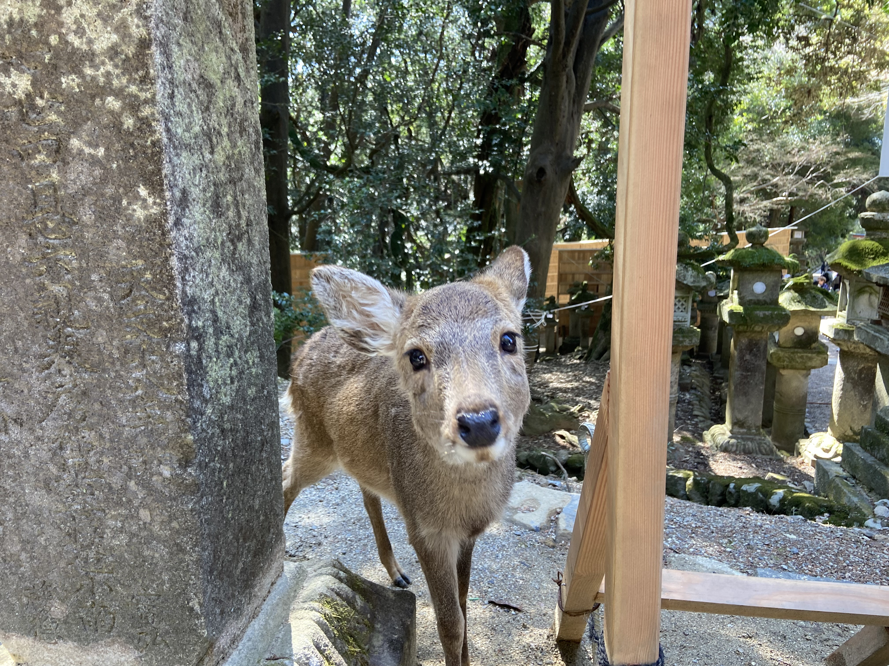

好きな街 其ノ弐
かつて都として栄えた奈良には歴史的建造物が多く残ります。神社・仏閣に留まらず、歴史のある建物が非常に多く存在します。また、大阪難波駅から奈良市の中心部である近鉄奈良駅まで電車１本で40分弱とアクセスが良く、大阪に住んでいた際何度も訪れました。奈良は疲れた心身を癒してくれる優しい街です。
奈良公園には原生林を住処とする鹿が多く生息します。鹿せんべいを片手に公園を歩けば鹿と触れ合うこともでき、心を落ち着かせるのにぴったりな場所です。たまに横断歩道を横切る鹿を待つドライバーを見るとほっこりします。そして原生林の中には春日大社があり、身の引き締まる思いで祈願するのもまた良しです。
奈良といえばやはり東大寺の大仏が真っ先に思い浮かぶかと思います。聖武天皇の命により、当時の最新技術を駆使してつくられました。高さ約18mの大仏を目の前にするとその大きさに圧倒されます。また、南大門には勇ましい金剛力士像が配置されており、こちらも見逃すことができません。
今から約1300年前、平城京の外都として整備されたのが「ならまち」です。奈良市中心部に位置し、歴史的な街並みを有しています。昔から続く酒蔵やこんぺいとう屋などがあり、伝統を感じつつ楽しむことができます。近くには元興寺や興福寺といった世界遺産に登録されている寺があります。